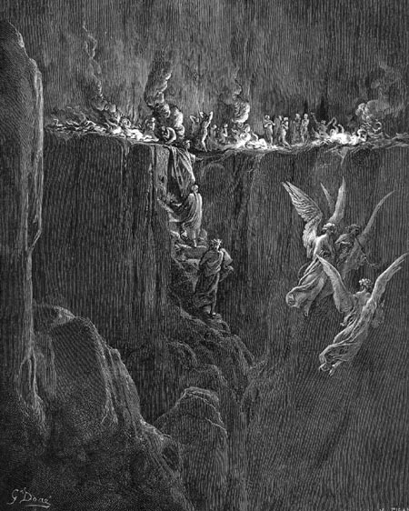

Canto XXV
Escada para a sétima cornija - Discurso de Estácio
Exemplos de castidade
Não podíamos demorar. Era preciso subir logo pois faltavam menos de quatro horas para o anoitecer. A passagem era estreita e a subida tinha que ser feita em fila única. Eu estava louco para poder falar e esclarecer uma dúvida que me atormentava, mas nossa pressa me fazia desistir, até que o mestre veio em meu auxílio.
- Fala! Faz logo essa pergunta que tanto te atormenta! - insistiu Virgílio. Eu então abri a boca para perguntar:
- Como é possível que os espíritos fiquem tão magros, se não precisam de alimento?
- Se lembrares como Meleagro foi consumido durante a queima de um tição, ou como a tua imagem no espelho responde aos teus movimentos, não terás dificuldade de compreender. Mas, para que possas ter todas as tuas dúvidas esclarecidas, passo a palavra agora a Estácio.
- Se a ele revelo a eterna visão das coisas - dirigiu-se Estácio a Virgílio - é porque não nego qualquer pedido teu -. Depois, pediu minha atenção e começou:
- Se prestares bastante atenção nas minhas palavras, filho, elas ajudarão a esclarecer essas tuas dúvidas, pois eu agora te explicarei o mistério do nascimento da alma. O coração do homem, que faz o sangue que alimenta o corpo humano, também dá poderes ao sangue perfeito para que ele possa dar origem à forma humana. Depois de purificado novamente, o sangue perfeito desce ao membro reprodutor onde verte no útero de uma mulher e se mistura com o sangue alheio. Lá, o sangue ativo do homem se une ao passivo da mulher e gera a matéria viva, que já é como planta, mas ainda está incompleta. Em pouco tempo o embrião atinge o estado animal, onde se mexe e sente, e cresce com a energia que vem do coração da mãe. Mas, como de animal se passa a ser humano, ainda não viste. Essa dúvida confundiu uma mente mais sábia que a tua, pois, na sua doutrina, ele separou o intelecto da alma, por não ter encontrado órgão que assumisse tal faculdade. Abre então teu peito à verdade final e saibas que, quando o desenvolvimento do cérebro do feto está completo, o Criador volta-se para ele, alegre ao poder contemplar tal primor da natureza, e lhe sopra um novo espírito. O espírito nasce com o poder para controlar a matéria viva que encontra e com ela se funde formando uma alma completa, que vive e que sente, e que tem consciência de si. Agora, quando chega enfim a hora da morte, a alma se liberta da carne, mas com ela permanece ainda sua natureza humana e divina. Seus poderes materiais não existem mais, porém a memória, inteligência e vontade estão mais agudas do que nunca. É nessa hora que ela cai, espontaneamente, nas margens do Tibre ou do Aqueronte, onde conhece finalmente seu destino. E então, quando a alma está ali no espaço vazio, o ar se molda em sua volta, dando-lhe a forma que tivera antes. Como a chama que sempre acompanha o fogo, a forma vazia segue o espírito para todo lugar, e por isto nós a chamamos de "sombra." Do ar a sombra forma órgãos para cada sentido, como o da vista. E assim falamos, rimos, choramos e suspiramos como pudesses comprovar neste monte. A sombra muda de forma de acordo com nossos desejos e sentimentos. Isto explica a magreza das almas gulosas.
Chegávamos, agora, à última volta. Virando à direita, como de costume, fomos surpreendidos por uma paisagem de chamas, que vertiam da encosta interna. As chamas só eram desviadas pelo vento que soprava de baixo e que deixava uma pequena beira, entre o fogo e o precipício, por onde era possível caminhar. Nós então seguimos por esse caminho estreito de causar medo, pois de um lado estava o fogo que queimava, e do outro o penhasco do qual eu poderia cair. Não fui só eu que percebi o risco:
- Neste lugar - observou Virgílio - é preciso ter cuidado, pois por bem pouco, corre-se o risco de errar.
|  |
| Dante, Estácio e Virgílio sobem para a sétima cornija, onde estão os luxuriosos ardendo no fogo. Ilustração
de Gustave Doré (século XIX). |
Deus de Suprema Clemência, ouvi vozes cantarem, do seio daquele grande ardor. Olhei com cuidado e vi que o som emanava de vários espíritos que caminhavam no fogo. Quando eles terminaram o hino, gritaram: "Eu não conheço homem algum," e depois, lentamente, voltaram a repetir o hino. Quando terminaram pela segunda vez, disseram "No bosque ficou Diana e de lá expulsou Helice, que provara o veneno de Vênus!". Repetiram o hino outra vez e depois elogiaram os casais que haviam mantido a castidade do matrimônio. Creio que essa repetição constante deve ser a penitência deles: a cura pelas chamas e a dieta dos hinos, até que a última de suas chagas seja sarada.
|